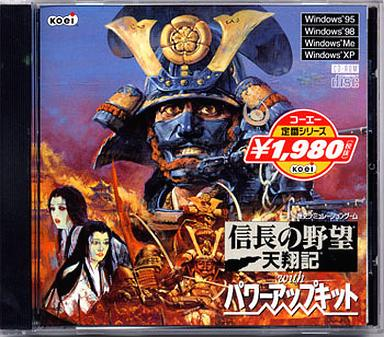

複数種類存在する｢天翔記 with PK｣、
その中でパッチ対象を含め、事実上の標準は｢定番シリーズ版｣です。

｢天翔記 with PK」には発売された時期の違いやパッケージ名の微妙な違いにより複数のバージョンが存在します。
このような複数のバージョンを相手にしていては、話が複雑になり前に進みません。
もし、｢自分のものは定番シリーズではない｣という場合は、定番シリーズへの差し替えを｢強く｣お勧めします。
このサイトでも該当の｢定番シリーズ｣であることを前提として、各種情報を提供しています。
該当のバージョンではない場合、バイナリ書き換えの情報などは、そのままのアドレスでは適応出来ないと考えください。
定番シリーズでない人でも簡単に｢定番シリーズ」相当にアップデートすることが出来ます。
それは以下、天翔記アップローダーにて、
をダウンロード、zipを解凍し、teibanフォルダ内にある２つのファイル｢tenshou.exe｣と｢n6paudio」を、
天翔記をインストールしたフォルダ内の同名ファイルへと上書きするだけで、｢定番シリーズ｣と事実上同じものとなります。